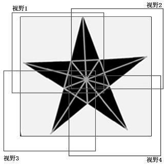
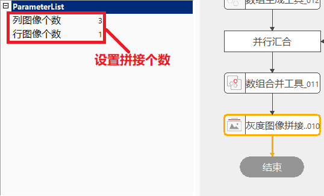
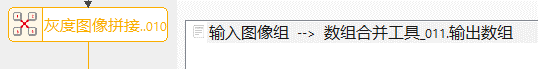
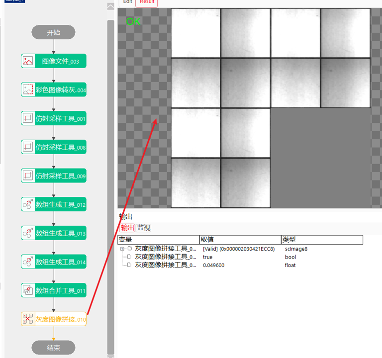

Ghép ảnh là kỹ thuật hợp nhất nhiều ảnh nhỏ của cùng một cảnh (có vùng chồng lấp) thành một ảnh lớn có độ phân giải cao và không đường nối. Các ảnh này có thể được chụp ở thời điểm khác nhau, góc nhìn khác nhau hoặc từ các cảm biến khác nhau. Công cụ ghép ảnh xám chỉ hỗ trợ ảnh đầu vào là ảnh xám và kết quả xuất ra cũng là ảnh xám.
Do giới hạn về trường nhìn và độ phân giải của camera ma trận, một camera đơn có thể không đáp ứng được yêu cầu quan sát diện rộng. Khi cần ghép ảnh từ nhiều camera, có thể sử dụng công cụ ghép ảnh xám.

Công cụ thực hiện ghép từ hai hoặc nhiều ảnh thành một ảnh kết quả duy nhất. Ảnh đầu vào có thể đến từ camera di chuyển hoặc từ nhiều camera khác nhau. Khi ghép, cần đưa các ảnh về cùng kích thước tương ứng.
Trong quá trình ghép, chỉ xử lý phần biên. Nếu số ảnh nhỏ hơn kích thước M×N (số hàng × số cột) yêu cầu, hệ thống dùng giá trị xám 128 để bù vào. Nếu số ảnh lớn hơn M×N, công cụ sẽ tự tăng số hàng để phù hợp với ảnh ghép cuối cùng.



| Mô tả hiện tượng | Giải pháp |
|---|---|
| Báo lỗi khởi tạo thất bại | Kiểm tra xem chuỗi dữ liệu đã liên kết đúng mảng ảnh hay chưa. |
| Tên tham số | Giải thích |
|---|---|
| Nhóm ảnh đầu vào | Tập ảnh xám cần ghép. |
| Số hàng | Số hàng của ảnh lớn sau khi ghép. |
| Số cột | Số cột của ảnh ghép; nếu số cột là số lẻ, hệ thống sẽ tính lại số hàng. |
| Tên tham số | Giải thích |
|---|---|
| Ảnh đầu ra | Ảnh xám sau khi ghép hoàn chỉnh. |
| Kết quả thực thi | Trạng thái thực thi của công cụ. |
| Thời gian thực thi | Thời gian xử lý của công cụ. |
参见“\Samples\灰度图像拼接工具.gvp”。